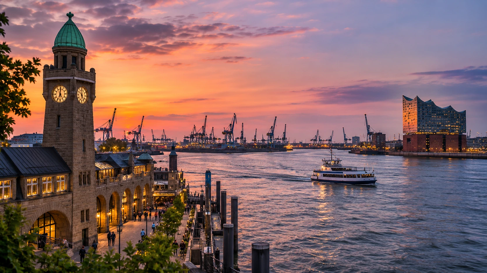
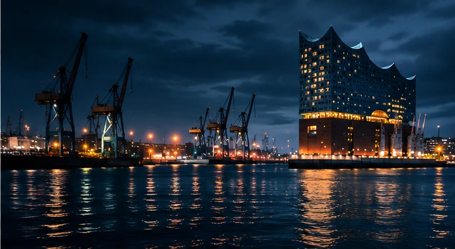

Die Elbe.
Zwei Welten.
Aktuelle Messwerte, eine bewegte Zeitreise über 30 Tage und zwei radikal unterschiedliche Designs. Wähle eine Variante.

01 / VARIANTE A · EDITORIALRuhig.
Weit.
Lebendig.
Helles, editoriales Design mit warmer Hafenfotografie und großzügiger Typografie.
Variante A öffnen ↗
02 / VARIANTE B · IMMERSIVEDunkel.
Laut.
Digital.
Immersiver Dark Mode, plakative Headlines und datengetriebene Bewegungen.
Variante B öffnen ↗